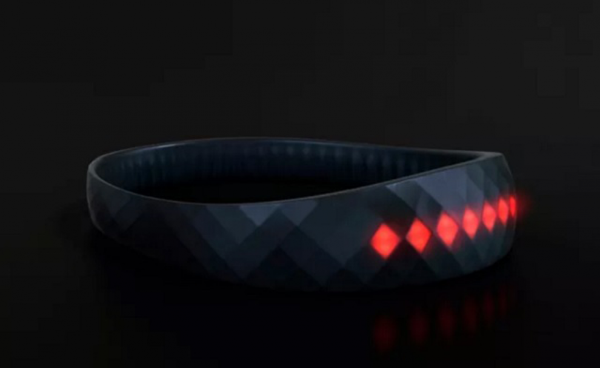

La plaie du sportif de haut niveau c'est la blessure. Une blessure empêche le sportif de faire son travail. Il faut donc l'éviter à tout prix. L'idée de cette page est de voir les différentes initiatives technologiques qui sont testées pour réduire les blessures dans le monde du sport.
En 2018, 3 personnes sont mortes sur un terrain de rugby des suites de chocs trop violents. Les fédérations nationales et internationales essayent autant que possible de trouver des solutions à ces problèmes : protocoles commotion, campagnes de sensibilisation, ... Les athlètes étant de plus en plus puissants, la violence des chocs à augmenté avec les années. Peut-être le salut viendra de la technologie ? Samsung a en tout cas devoilé son nouvel objet connecté ayant pour but de prévenir des commotions dans le rugby. Il s'agit d'un casque connecté permettant de capter la violence d'un choc via des signaux lumineux. Un choc trop violent sera donc immédiatement signalé et les protocoles adaptés pourront être mis en oeuvre.
Le casque connecté de Samsung
Un certain nombre de blessures, surtout dans le monde amateur sont dues à un sous-entraînement. Le sportif se croît capable de réaliser telle ou telle chose mais ce n'est pas le cas. Il va alors aller trop loin dans l'effort. Cela se traduit souvent par des lesions musculaires. La technologie va pouvoir aider dans ces cas-là. En effet, GestureLogic Inc a lancé une cagnotte pour le developpement d'un cuissard connecté. Le but de ce cuissard est de repérer dans un premier temps le type de sport que la personne est en train de faire. Dans un second temps, il va capter l'effort musculaire de la personne. Si celui-ci présente un risque, le software relié au cuissard enverra l'alerte à l'utilisateur.
Plus généralement, la prévention de blessure passe par l'analyse de données. Des données sur les sportifs sont captées et sont traitées par un algorithme de Machine Learning. Celui-ci va en extraire une connaissance et faire des préconisations pour éviter la blessure.
La sur-extraction de données peut cependant avoir certaines limites. Les joueurs du FC Nantes ingèrent des gellules connectées avant les matchs. Cela permet de capter l'ensemble de leur données biologique afin de connaître précisément leur état physique à chaque instant. Dans ce cadre là, la barrière éthique peut-être franchie. Un objet à l'interieur du corps qui envoie des ondes avec des informations qualifiant à tout instant la santé biologique. Cela pourrait être utilisé à des fins moins ethiques qu'éviter une blessure.